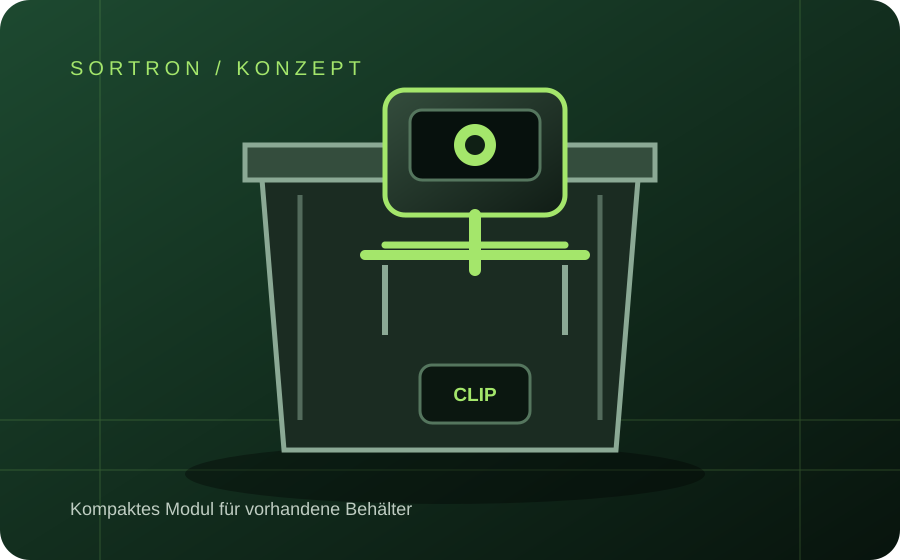

KOMPAKT · FLEXIBEL
Sortron Clip
Die kompakte Sortron-Version zum Befestigen an einer vorhandenen Mülltonne. Besonders interessant für Camper, kleine Küchen und alle, die vorhandene Behälter weiterverwenden möchten.
149 €
VORGESEHENER PREIS · NOCH NICHT VERBINDLICH
- Zur Befestigung an einer vorhandenen Tonne
- Vier Sortierpositionen frei zuordenbar
- Eigene Clip-Konfigurationssoftware
- Für unterschiedliche Behälter-Anordnungen gedacht
Software inklusive
Mit der Clip-Software kannst du festlegen, welcher Behälter zu welcher Sortierposition gehört.
Sortron Clip anfragen
Mit der Clip-Software kannst du festlegen, welcher Behälter zu welcher Sortierposition gehört.